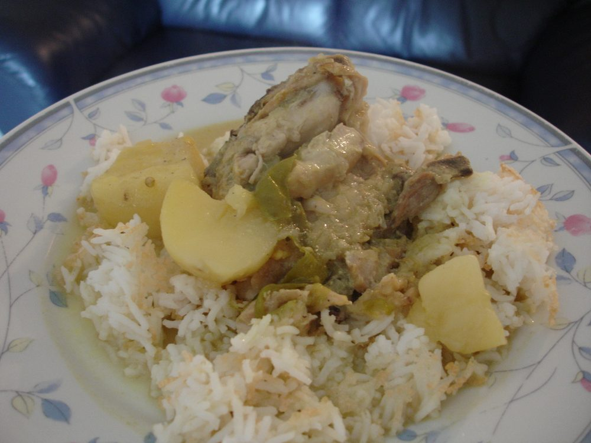

Nadan Chicken Stew
pale peppery chicken and potato stew in coconut milk, the classic appam partner

Allergens: none of the ten listed below
Checked against the ingredient list for milk, egg, fish, crustaceans, tree nuts, peanuts, sesame, mustard, soy and gluten. Nothing else is checked, and brands vary, so read the label on anything you have not bought before.
Ingredients
Quantities for 4.
- 700g, bone-in pieces Chicken
- 2 medium, cut into large chunks Potato
- 1, cut into thick coins Carrotoptional
- 2, sliced thin Onion
- 2 tbsp, julienned Ginger
- 6 cloves, sliced Garlic
- 4, slit Green Chilli
- 1.5 tsp, coarsely crushed Black Pepperthe only heat that belongs here
- 1 piece Cinnamon
- 4 Cloves
- 3, bruised Cardamom
- 500ml Coconut Milk400ml thin, 100ml thick
- 2 sprigs Curry Leaves
- 2 tbsp Coconut Oil
- to taste Salt
Cookware
stovetop
Before you start
- Stew is a white curry: no turmeric, no chilli powder, no browning. Keep the heat low the whole way through.
- Separate your coconut milk before you start. Thin for cooking, thick for finishing. If using tinned, dilute 150ml with 250ml water for the thin.
- Cut the potato into chunks no smaller than 4cm so they hold their shape through 25 minutes of simmering.
Method
- Heat the coconut oil in a heavy pot over medium-low and add the cinnamon, cloves and cardamom. Fry 30 seconds until fragrant.
- Add the onion, ginger, garlic and green chillies with a pinch of salt. Cook 6-8 minutes until soft and glassy.Do not let them colour. Any browning and it stops being a stew.
- Stir in the crushed pepper and fry 30 seconds.
- Add the chicken and turn it in the aromatics for 3 minutes until the flesh turns opaque white.
- Pour in the thin coconut milk, add the potato, carrot, curry leaves and salt, and bring to a bare simmer.
- Cover and cook on low for 25 minutes, until the chicken pulls easily from the bone and the potato is soft at the centre.A hard boil will curdle the coconut milk and toughen the chicken. Keep it at a lazy blip.
- Uncover and stir in the thick coconut milk. Warm through for 2 minutes without letting it boil.
- Taste for salt and pepper, then rest covered for 10 minutes off the heat before serving with appam.The stew tastes noticeably better after ten minutes of sitting. Build it into your timing.
Storage
Keeps 2 days refrigerated and improves overnight. Reheat over low heat, stirring, and add a splash of water. It thickens considerably when cold.
Nutrition Medium estimate
| Per serving482 g | Per 100 g | |
|---|---|---|
| Calories | 629+ kcal | 131+ kcal |
| Protein | 43.2+ g | 9+ g |
| Carbohydrate | 29.5+ g | 6+ g |
| of which sugars | 4.2+ g | 1+ g |
| Fibre | 4.0+ g | 1+ g |
| Fat | 39.1+ g | 8+ g |
| of which saturated | 30.7+ g | 6+ g |
| of which unsaturated | 5.0+ g | 1+ g |
The + means ingredients given to taste rather than by weight are counted as zero, so the true figure is a little higher than shown. Worked out from the listed quantities. Some of the ingredient list is given to taste rather than by weight, so treat these as a guide. Ingredients given to taste rather than by weight are counted as zero, so the real figure is a little higher than this. The + says so. Some ingredients have no exact match in the nutrient database and use the nearest equivalent: curry leaves. Estimated from raw ingredients using USDA FoodData Central. Cooking changes are not modelled, and added salt is excluded, so sodium is not given.
Recipe v1.0.0, last updated 2026-07-31. Curated for Khaana and kept under version control.